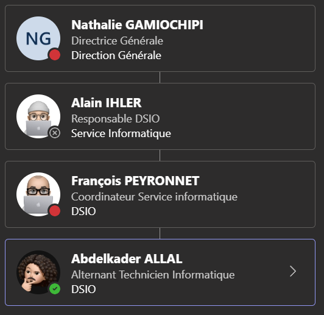
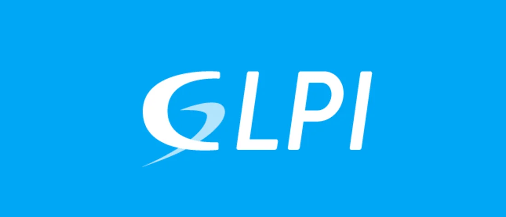
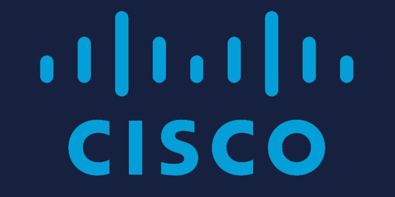

Bonjour, bienvenue sur mon Portfolio
Abdelkader Allal - Étudiant en BTS SIO (option SISR)
👤 Qui je suis
BONJOUR, Je m'appelle Abdelkader Allal, 21 ans, technicien système réseau en apprentissage et actuellement en quête d'un BTS SIO SISR (services informatiques aux organisations, solutions d'infrastructure, systèmes et réseaux).
🏫 Mon école
J'effectue actuellement mon BTS à Scholanova, une école supérieure en alternance (BTS / Bachelor) pour des formations professionnelles située dans le 19ᵉ arrondissement de Paris et qui accompagne les étudiants dans la recherche d'alternance via un réseau d'entreprises partenaires.
🏢 Entreprise
Dans le cadre de cette formation, j'occupe le poste de technicien systèmes et réseaux en alternance au sein de l'association Ambroise Croizat. L'Association Ambroise Croizat est une association loi 1901 dédiée à la rééducation professionnelle, à l'inclusion sociale et à la formation des personnes en situation de handicap. Elle gère des établissements spécialisés pour favoriser la reconversion et l'insertion professionnelle.

L'association vise à permettre aux personnes privées d'emploi pour raisons médicales de se réinsérer via un nouveau métier compatible avec leur santé. Elle met l'accent sur l'accompagnement personnalisé, l'innovation sociale et l'accès à une formation qualifiante. Elle gère deux Établissements et Services de Réadaptation Professionnelle (ESRP) : Louis Gatignon dans le Cher (accueillant 90 personnes/an avec hébergement) et Masson-Timbaud en Île-de-France (600 personnes/an). L'offre inclut un pôle projet (remobilisation), un pôle qualifiant (diplômes en administratif, informatique, etc.) et des formations continues certifiées Qualiopi.

🛠️ Rôle dans l’entreprise
Dans mon entreprise, j’occupe le rôle de technicien systèmes et réseaux. Ma mission principale est d’assurer le support aux utilisateurs et de garantir le bon fonctionnement du parc informatique et de l’infrastructure réseau au quotidien. J’interviens à la fois à distance et sur site, en fonction des besoins et du niveau d’urgence des demandes.
Je traite les demandes via un outil de ticketing : je prends en charge les tickets, j’analyse les incidents ou demandes, je réponds aux utilisateurs et je propose des solutions adaptées. Lorsque cela est nécessaire, je me déplace pour réaliser des interventions sur poste ou sur l’infrastructure afin de rétablir le service (diagnostic, correction, tests et validation avec l’utilisateur).
Je participe également à la gestion du parc informatique. Je déploie et prépare des ordinateurs pour les mettre à disposition du personnel, en assurant leur installation et leur configuration avant livraison. Dans le cadre des arrivées de nouveaux collaborateurs, je crée les comptes nécessaires et je mets en place les accès requis afin de garantir une prise de poste rapide et sécurisée.
Sur la partie réseau, je configure des switchs en fonction de l’architecture en place, notamment en paramétrant les VLAN et l’affectation des ports selon les usages (postes utilisateurs, téléphonie, bornes Wi-Fi, équipements spécifiques). Je mets aussi en place des bornes Wi-Fi et je réalise leur configuration pour assurer une couverture adaptée et une connexion fiable, tout en respectant les paramètres définis (SSID, sécurité, intégration au réseau existant).
Enfin, je maintiens un suivi rigoureux du matériel et des interventions en tenant l’inventaire à jour dans GLPI. Cela permet d’avoir une traçabilité des équipements, de mieux gérer le cycle de vie du matériel, et de faciliter la maintenance ainsi que le support aux utilisateurs.
📖 BTS SIO SISR
Le BTS SIO option SISR (Solutions d’Infrastructure, Systèmes et Réseaux) est une formation de niveau Bac+2 spécialisée dans l’administration des systèmes informatiques et des réseaux. Il prépare les étudiants à installer, configurer, sécuriser et maintenir les infrastructures informatiques des entreprises.
Cette formation permet d’acquérir des compétences techniques solides en réseaux, systèmes d’exploitation et cybersécurité. Elle mène à des métiers tels que technicien systèmes et réseaux ou administrateur réseau junior, avec également la possibilité de poursuivre des études.
À l’issue de mon BTS SIO option SISR, je souhaite poursuivre mes études avec un Bachelor AIS (Administrateur d'infrastructures sécurisées) afin de renforcer mes compétences en systèmes, réseaux et sécurité. Je prévois ensuite d’intégrer un Master en cybersécurité dans le but de me spécialiser dans la protection des infrastructures informatiques et la sécurité des données.
📚 Mon Parcours
Lycée Galilée
Bac général option Maths / Sciences Économiques et Sociales
Université Paris Nanterre
Licence Économie gestion
Scholanova
BTS SIO option SISR
Épreuves
Épreuve E6
Mes réalisations
Active Directory

• Mise en place d’un domaine Windows Server (installation du rôle AD DS, promotion du contrôleur de domaine).
• Création d’unités d’organisation (OU) pour structurer les utilisateurs, groupes et machines.
• Gestion des comptes utilisateurs et groupes de sécurité (droits d’accès aux ressources).
• Déploiement de stratégies de groupe (GPO) : mot de passe, restrictions, mappage de lecteurs réseau.
• Tests d’authentification et de résolution de noms (DNS intégré à Active Directory).
Serveur GLPI

• Installation d’un serveur GLPI sur Linux (Apache, PHP, MariaDB) et configuration de la base de données.
• Paramétrage des entités, des profils et des notifications pour la gestion des tickets.
• Mise en place de l’inventaire du parc informatique (création des ordinateurs, imprimantes, logiciels).
• Intégration éventuelle avec un agent d’inventaire (FusionInventory / OCS) pour la remontée automatique.
• Rédaction d’une procédure utilisateur pour l’ouverture et le suivi des tickets.
Configuration d'un pare-feu pfSense
• Installation de pfSense et configuration initiale (interfaces WAN / LAN, accès WebGUI sécurisé).
• Mise en place du routage et du NAT pour fournir l’accès Internet au réseau local.
• Création de règles firewall pour contrôler les flux entrants et sortants (par IP, port, protocole, VLAN).
• Configuration de services : DHCP/DHCP relay, DNS forwarder, éventuellement portail captif.
• Tests de connectivité et de sécurité (ping, tracert, vérification du blocage de ports non autorisés).
Configuration de switch Cisco

• Création et affectation de VLAN (données, administration, invités, etc.).
• Configuration des ports en mode access ou trunk, gestion du VLAN natif et du VLAN voix.
• Mise en place de la gestion distante sécurisée (SSH, désactivation de Telnet, bannières légales).
• Activation des mécanismes de protection et de redondance (Spanning-Tree, portfast, BPDU guard).
• Sauvegarde/restauration de la configuration et documentation de l’architecture réseau.
Certifications
Certification SecNum

Certification ANSSI SecNumacadémie validant les bases de la cybersécurité.
Thèmes : bonnes pratiques, protection des données, sécurité des postes et du réseau.
⬇️
Télécharger l'attestation SecNumVeille Technologique
Qu’est‑ce qu’un moteur de jeu vidéo ?
Un moteur de jeu vidéo est un logiciel complet qui fournit toutes les briques techniques nécessaires pour créer un jeu sans repartir de zéro à chaque projet. Il regroupe généralement un moteur graphique (rendu 2D ou 3D), un moteur physique (collisions, gravité, mouvements réalistes), un système audio, un module d’interface utilisateur, un système d’animation et des outils de scripting pour coder la logique du jeu.
Les moteurs modernes intègrent aussi un éditeur visuel qui permet de construire les niveaux en “drag‑and‑drop”, de régler la lumière, les matériaux, les particules, etc. L’objectif est de faire gagner beaucoup de temps aux développeurs : au lieu de recoder la gestion des textures ou de la caméra, ils se concentrent sur le gameplay, l’histoire et le level design.
Enfin, la plupart des moteurs récents sont multi‑plateformes : avec le même projet, on peut viser PC, consoles, mobiles, parfois le web ou la VR, simplement en changeant les options d’export.
Les moteurs les plus utilisés aujourd’hui
Unity
Unity est l’un des moteurs les plus connus, surtout pour les jeux mobiles, les jeux indépendants et la réalité virtuelle. Il propose une interface en “éditeur de scène” avec une hiérarchie d’objets, un système de composants et un scripting principalement en C#.
Son gros point fort est son écosystème : l’Asset Store permet d’acheter ou de télécharger des modèles 3D, animations, systèmes de dialogue, IA, shaders… ce qui accélère énormément le développement, surtout pour les petits studios.
En revanche, Unity a été au centre d’une grosse polémique en 2023, lorsqu’ils ont annoncé un changement de modèle économique avec une “taxe par installation”, ce qui a fait fuir une partie de la communauté avant qu’ils ne fassent marche arrière. Aujourd’hui, l’outil reste très utilisé, mais beaucoup de développeurs gardent cette histoire en tête et réfléchissent à des alternatives sur le long terme.
Unreal Engine
Unreal Engine, développé par Epic Games, est particulièrement présent dans les jeux AAA et les productions à gros budget. La version 5 a introduit deux technologies très marquantes : Nanite, qui permet de gérer des modèles avec énormément de détails géométriques, et Lumen, un système d’éclairage global dynamique très réaliste.
Grâce à ces innovations, Unreal est devenu une référence pour les graphismes photoréalistes, au point d’être utilisé aussi dans le cinéma, les séries, l’architecture ou les démonstrations techniques pour l’industrie. Le moteur est gratuit au départ, avec un système de royalties au‑delà d’un certain chiffre d’affaires, ce qui reste acceptable pour beaucoup de studios.
Les deux principaux inconvénients sont sa lourdeur (il demande une machine puissante) et une courbe d’apprentissage plus difficile, surtout pour les débutants qui n’ont jamais touché à la 3D.
Godot Engine
Godot est un moteur open source sous licence MIT, ce qui signifie qu’il est totalement gratuit, sans royalties, et que son code est accessible à tous. Il est particulièrement apprécié des développeurs indépendants et des étudiants, car il est léger, s’installe vite et ne nécessite pas de compte ou de licence particulière.
Godot propose son propre langage de script, GDScript, qui ressemble à Python, ainsi que la possibilité de programmer en C#, C++ ou via des scripts visuels. Longtemps réputé surtout pour la 2D, il progresse aussi en 3D avec la version 4, même si cette partie reste globalement moins mature que celle de Unity ou d’Unreal, surtout pour les très gros projets.
Depuis les polémiques autour de Unity, de plus en plus de créateurs de jeux indés envisagent de passer à Godot ou de l’utiliser pour leurs prototypes.
Autres moteurs : GameMaker, GDevelop, PlayCanvas…
En 2D, on trouve des moteurs comme GameMaker ou GDevelop, pensés pour rendre la création accessible aux débutants. Ils permettent de construire des mécaniques de jeu avec des blocs visuels (“events”, conditions, actions) sans être obligé de maîtriser un langage de programmation classique.
Ces outils sont très utilisés pour les petits jeux, les game jams ou les projets scolaires, mais ils sont moins adaptés à des productions 3D ambitieuses. On peut aussi mentionner PlayCanvas, un moteur orienté web qui fonctionne directement dans le navigateur et vise surtout les jeux HTML5 ou les expériences interactives en ligne.
Dans le monde professionnel, il existe encore d’autres moteurs (propriétaires ou open source) plus spécialisés, par exemple pour les simulations industrielles ou les jeux sur console uniquement.
Comparaison globale (forces / faiblesses)
On peut comparer rapidement les principaux moteurs selon plusieurs critères : coût, facilité de prise en main, rendu graphique, cible principale.
Unity : bonne solution généraliste, très forte sur le mobile, énormément de tutoriels et d’assets, mais climat de confiance fragilisé par les décisions commerciales passées.
Unreal Engine 5 : excellent pour viser des graphismes réalistes, grandes cartes et jeux multijoueurs complexes, mais demande beaucoup de ressources matérielles et un peu plus de temps pour être à l’aise.
Godot : idéal pour apprendre, faire des prototypes ou des jeux indés 2D/3D, grâce à sa légèreté et à sa licence libre, mais certains outils avancés manquent encore pour rivaliser avec les très gros moteurs sur les jeux AAA.
GameMaker / GDevelop : très bons pour se lancer rapidement, créer des plateformes 2D, puzzle games ou bullet‑hell, et pour l’enseignement, mais limités dès que l’on vise le photoréalisme ou des fonctionnalités réseau très poussées.
Pour un étudiant ou un développeur débutant, le choix se fait souvent entre Godot (pour l’ouverture et la simplicité) et Unity (pour la quantité de ressources pédagogiques et d’assets). Pour un studio qui veut concurrencer les grosses productions graphiquement, Unreal reste généralement le candidat le plus sérieux.
Tendances technologiques récentes autour des moteurs
Montée de l’open source et méfiance vis‑à‑vis des licences
Les changements un peu brutaux de modèle économique chez certains éditeurs ont renforcé la méfiance des développeurs. Résultat : les moteurs open source comme Godot, O3DE ou Bevy gagnent en popularité, notamment chez les indés qui ne veulent pas dépendre d’une décision commerciale qui pourrait les mettre en difficulté en plein développement.
Cette tendance pousse aussi les gros éditeurs à mieux communiquer sur leurs conditions d’utilisation et à proposer des offres plus transparentes.
Intégration du cloud et du web
De plus en plus de moteurs permettent le travail collaboratif à distance : partage de projet, versioning intégré, build dans le cloud, tests instantanés sur plusieurs plateformes. Les moteurs orientés web, capables de compiler vers WebGL ou WebGPU, permettent d’exécuter un jeu directement dans le navigateur sans installation, ce qui est très intéressant pour les démos, les serious games ou la publicité interactive.
Cela va dans le sens général de l’informatique “cloud native”, où une partie de la puissance de calcul et du pipeline de production est déportée sur des serveurs distants.
Rendu réaliste, temps réel et nouveaux usages
Les moteurs de jeu ne servent plus uniquement à faire des jeux : ils sont utilisés pour les jumeaux numériques, les simulateurs de conduite, la prévisualisation de films ou la visite virtuelle d’immeubles.
Grâce aux progrès du rendu temps réel, on peut obtenir des images quasi cinématographiques sans passer par un long rendu hors‑ligne, ce qui change la manière de travailler dans d’autres industries créatives. Cette convergence entre jeux vidéo, cinéma et simulation fait des moteurs un outil central pour toute la 3D temps réel.
Arrivée de l’intelligence artificielle dans les moteurs
Beaucoup d’outils de développement commencent à intégrer des fonctions d’IA : assistants pour générer du code, création d’assets (textures, sons, dialogues) à partir de prompts, aides à la génération de niveaux procéduraux.
Du côté du gameplay, on voit apparaître des PNJ capables de réagir plus naturellement grâce à des modèles de langage, voire de se souvenir de certaines interactions du joueur. Cela ouvre de nouvelles possibilités de conception, mais pose aussi des questions éthiques (données, droits d’auteur, emploi des artistes).
Enjeux pour les développeurs et conclusion de la veille
Pour un développeur ou un étudiant, le choix du moteur influence à la fois les compétences à acquérir et les opportunités de carrière. Maîtriser Unity ou Unreal reste très valorisé sur le marché du travail, car beaucoup de studios professionnels utilisent encore ces moteurs.
Cependant, connaître aussi un moteur open source comme Godot peut être un atout, car cela montre une capacité à s’adapter, à lire du code source et à contribuer à une communauté. À moyen terme, les tendances fortes semblent être : plus d’ouverture (open source), plus de web (WebGPU, jeux dans le navigateur), plus d’IA dans les outils et une utilisation des moteurs bien au‑delà du simple jeu vidéo.
Comment je fais ma veille sur les moteurs de jeu
Pour rester informé des évolutions sur Unity, Unreal Engine, Godot et les autres moteurs, je mets en place une veille régulière à partir de plusieurs sources complémentaires.
• Google Alertes : suivi de mots‑clés comme “Unreal Engine 5”, “Godot 4 release” ou “game engine benchmark” pour recevoir les nouveautés et annonces importantes par mail.
• Sites et magazines spécialisés jeux vidéo / tech : consultation régulière d’articles et de dossiers sur l’évolution des moteurs, les performances et les retours d’expérience de studios.
• Chaînes YouTube dédiées au développement de jeux : visionnage de tutoriels et d’analyses (nouveautés des versions, comparatifs de moteurs, retours sur les outils d’IA intégrés).
• Réseaux sociaux et communautés : suivi de développeurs indépendants et de studios sur X (Twitter), Reddit ou Discord pour avoir des retours terrain (bugs, bonnes pratiques, changements de licences).
Cette combinaison de sources me permet d’actualiser régulièrement mes connaissances, d’identifier les grandes tendances (open source, IA, cloud) et de comprendre l’impact concret sur les projets de développement de jeux.
Contact